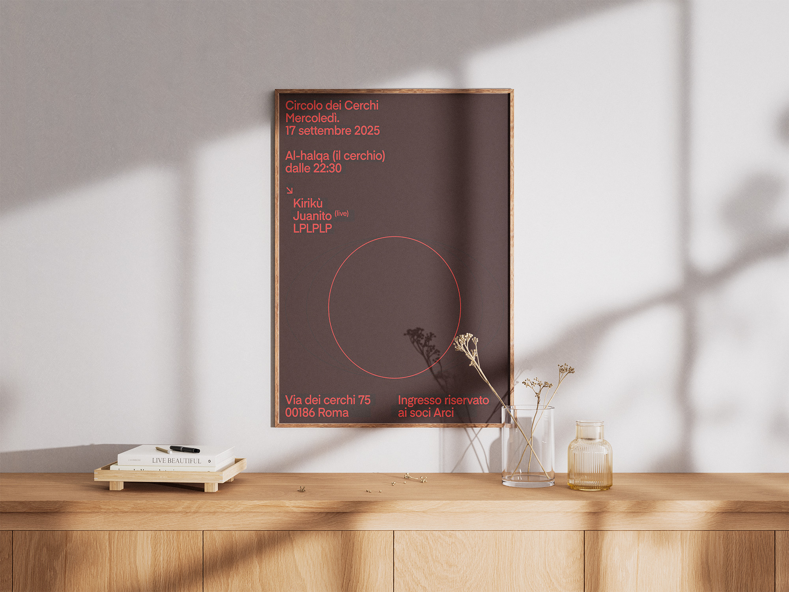

Circolo dei Cerchi
Poster design
Circolo dei Cerchi (2024).
For this project, I designed the poster for a music event hosted at Circolo dei Cerchi in Rome. The visual identity was developed around the idea of the circle, using a simple geometric element as the main graphic device and connecting it directly to the name and atmosphere of the venue. The composition combines bold typography, dark background tones, and red accents to create a clear and immediate visual impact. The layout is functional and direct, organizing event information while maintaining a strong graphic presence. The poster was designed for both printed and digital communication, translating the energy of the event into a minimal but recognizable visual language.
